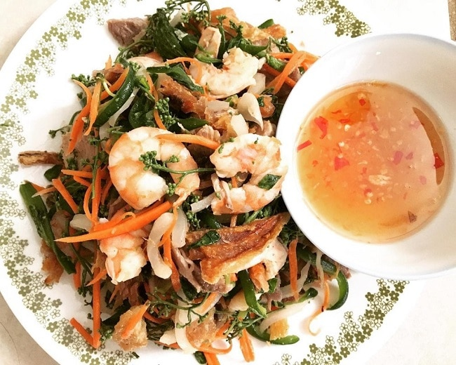

Giới Thiệu
Châu Đốc là một trong hai thành phố của tỉnh An Giang bên cạnh Long Xuyên. Thành phố Châu Đốc nằm cạnh biên giới Việt Nam – Campuchia, là vùng đất có bề dày lịch sử, mang đậm dấu ấn văn hóa phương Nam thời mở cõi. Tọa lạc ở một vị trí độc đáo, trước mặt là ngã ba sông, sau lưng là dãy Thất sơn hùng vĩ, với địa hình núi đá nổi giữa vùng đồng bằng trù phú, liền kề hệ thống kênh, rạch tạo nên cảnh quan thiên nhiên thơ mộng hữu tình. Xin giới thiệu những địa điểm du lịch Châu Đốc thú vị bạn nhất định phải ghé thăm.
Địa điểm
Núi Sam ở phường Núi Sam, thị xã Châu Đốc, tỉnh An Giang. Phía Tây Bắc của núi là kênh Vĩnh Tế chạy dọc biên giới Campuchia. Phía Tây Nam giáp xã Thới Sơn và Nhơn Hưng thuộc huyện Tịnh Biên. Phía Đông Bắc và Đông Nam giáp phường Châu Phú A, Châu Phú B của thị xã Châu Đốc. Núi Sam cách TP. HCM khoảng 240 km, cách khách sạn Victoria Châu Đốc 6km về phía Tây Nam.
-
1.Miếu Bà Chúa Xứ
Miếu Bà và tượng Bà gắn liền với nhiều truyền thuyết huyền bí, hấp dẫn, được lưu truyền qua nhiều thế hệ nổi tiếng linh thiêng và ứng nghiệm “cầu được ước thấy”. Lễ hội Vía Bà Chúa Xứ núi Sam hàng năm thu hút hàng triệu lượt người đến tham quan, chiêm bái, tạo nên một mùa lễ hội nhộn nhịp, sôi động. Ngày chính vía là 25/4 âm lịch, là ngày tượng Bà an vị sau khi khiêng xuống núi. Công trình Miếu Bà được xây dựng với kiến trúc tháp dạng hoa sen nở, mái tam cấp ba tầng, ngói xanh cùng với các hoa văn nghệ thuật đặc sắc với nhiều nét chạm trổ tinh tế, công phu và những bức hoành phi vàng son, càng làm tăng thêm sự cổ kính, tôn nghiêm.
-
2.Lăng Thoại Ngọc Hầu
Lăng Thoại Ngọc Hầu nằm trên nền cao tựa lưng vào núi Sam, đối diện với miếu Bà Chúa Xứ, là Di tích lịch sử văn hóa cấp quốc gia, nơi an nghỉ của Tổng trấn Vĩnh Thanh Thoại Ngọc Hầu và nhị vị phu nhân. Lăng Thoại Ngọc Hầu là công trình kiến trúc đặc sắc, cổ kính, với một tổng thể hài hòa mang phong cách lăng tẩm triều Nguyễn.
-
3.Chùa Hang
Chùa Hang nằm trên triền Núi Sam còn được gọi là Phước Điền Tự, cách chùa Tây An, lăng Thoại Ngọc Hầu, miếu Bà Chúa Xứ núi Sam khoảng 1km. Ngôi chùa có lịch sử hơn 100 năm này còn thu hút khách gần xa bởi câu chuyện về đôi mãng xà bên trong hang núi sâu được cảm hóa, thường đến ăn đồ chay, trông chừng thú dữ, kẻ gian, bảo vệ chốn tu hành. Với lối kiến trúc đặc biệt cùng màu nâu đỏ làm tone chủ đạo, những mái ngói được xây dựng theo hình mũi thuyền cong vút, tạo càng làm tăng sự độc đáo của lối kiến trúc chùa Hang. Du lịch An Giang, ghé thăm chùa Hang, bạn như đi qua cánh cửa mở ra một thế giới mới để trút bỏ mọi vấn vương bụi trần, hòa mình vào không an yên ả trong lành và êm dịu như chốn cổ tích.
-
4.Victoria Núi Sam
Cách trung tâm thành phố Châu Đốc chỉ 20 phút chạy xe, khu nghỉ dưỡng Victoria Núi Sam nằm thoai thoải trên sườn núi Sam. Tất cả các phòng đều được thiết kế theo lối kiến trúc hiện đại, tối giản, nhưng vẫn tinh tế, màu sắc chủ đạo là màu gạch hồng ấm áp gần gũi hòa hợp với thiên nhiên, đất trời.
Món ngon
Là một thị xã nằm ngay sát biên giới của Việt Nam trực thuộc tỉnh An Giang, Châu Đốc nổi tiếng với các thắng cảnh như Núi Sam, miếu bà Chúa Xứ,… hàng năm thu hút lượng khách du lịch đông đảo. Thêm vào đó, ẩm thực nơi đây còn để lại ấn tượng khó phai trong lòng du khách. Hãy cùng Top10tphcm.com điểm xem những món đặc sản này là gì ngay nhé.
-
1.Gỏi sầu đâu
Nhắc đến đặc sản Châu Đốc thì món đầu tiên mà người ta nghĩ đến chắc chắn sẽ là gỏi sầu đâu. Là một loại cây mọc khá nhiều ở vùng Châu Đốc, lá và hoa sầu đâu có thể làm nguyên liệu để chế biến thành nhiều món khác nhau trong đó gỏi sầu đâu xem như một món ăn bản xứ, thân thuộc và gần gũi được lòng du khách thập phương mỗi khi có dịp ghé thăm. Lá non và hoa sầu đâu sau khi được hái về sẽ được rửa sạch, trần qua nước sôi cho bớt đắng rồi để ráo rồi đem trộn với tôm, thịt, cá,… để tạo thành món gỏi.
Địa chỉ ăn Gỏi sầu đâu ngon.
-104 Đống Đa, P. Châu Phú A, T.p Châu Đốc, An Giang
-
2.Bánh đúc Châu Đốc
Nằm trong danh sách món đặc sản Châu Đốc được bạn bè khắp nơi yêu thích, bánh đúc Châu Đốc có sức hấp dẫn đến tín đồ ẩm thực một cách lạ lùng. Không quá cầu kỳ trong cách chế biến nhưng bánh đúc ở đây lại mang hương vị khác biệt, rất đặc trưng mà không phải loại bánh đúc bình dân nào cũng có được. Vị béo ngậy của bánh đúc và đặc biệt là vị nước cốt dừa đã đủ khiến du khách lưu luyến mãi không quên kể cả những người chỉ vừa đặt chân đến đây lần đầu tiên.
Gợi ý địa chỉ ăn Bánh đúc Châu Đốc ngon dành cho bạn:
-Đối diện bến xe Châu Đốc
-
3. Bún cá Châu Đốc
Luôn nằm trong số những món ăn đặc sản hấp dẫn du khách thập phương, bún cá Châu Đốc để lại ấn tượng rất đặc biệt với mỗi thực khách mỗi khi có dịp tham quan mảnh đất này. Mùi thơm của cá hòa quyện với vị đậm đà của nước lèo đủ để làm nên một món bún cá có sức lôi cuốn hấp dẫn đến thực khách một cách lạ kỳ. Bún cá Châu Đốc có thể ăn kèm rau diếp cá, húng quế, bắp chuối và bông điên điển, rất đặc trưng miền Tây để giữ nguyên hương vị thơm ngon, thanh mát, đem đến nét hấp dẫn khó cưỡng của một món ăn tưởng chừng rất đỗi thân quen này.
Địa điểm ăn Bún cá ngon:
-Bún cá dì Lệ,Lê Công Thành, Thành Phố Châu Đốc
-Bún cá Lê Công Thành,P. Châu Phú A, T.p Châu Đốc
Hỗ trợ
Tìm hiểu thêm
Tải ứng dụng của chúng tôi
/qr.png)
/ggplay.png)
/appstore.png)